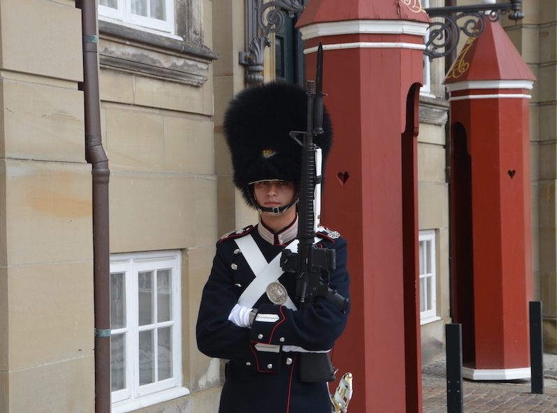

Hvem er jeg?
Jeg har altid været meget interesseret i at lære og forholde mig til medier. Da jeg fik muligheden tog jeg mediefag som valgfag i gymnasiet. Ideen om at være kreativ og skabende har altid betydet meget for mig. Jeg holder af at prøve nye ting, samt mig selv af. Som det seneste ved at begynde som mulitmediedesigner.
Før studiets begyndelse tilbragtejeg 8 måneder som værnepligtig hos Den Kongelig Livgarde. Her var meningen også at prøve sig selv af. Det lykkes meget godt og denne oplevelsen har skabt en generel forestilling om at man skal prøve ting af når man har chancen.